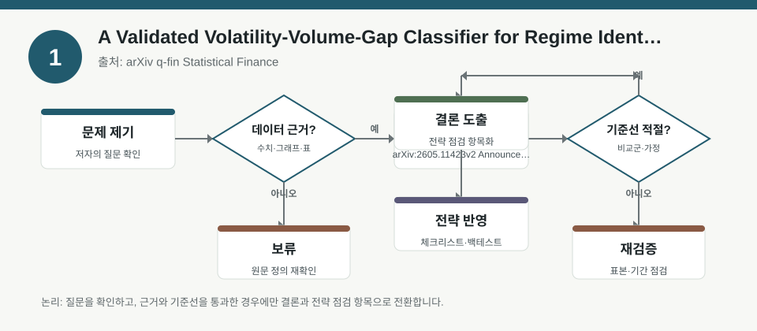
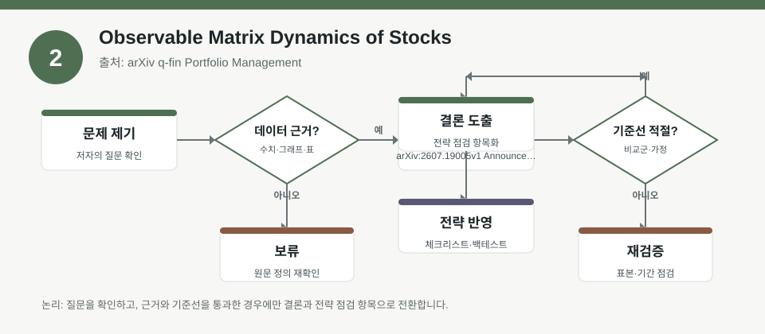
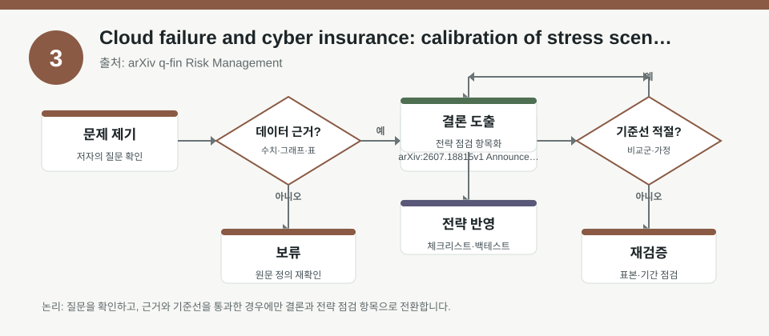

핵심 요약
- 결론: 3개 자료 모두 “관측 가능한 신호를 어떻게 위험·국면·분산에 연결할지”를 다루며, 한국 투자자는 KOSPI/KOSDAQ 업종 노출과 환율·금리·변동성 점검표에 붙여 해석하는 것이 핵심입니다.
- 원칙: 숫자와 성과는 메타데이터만으로 확정할 수 없으므로, 백테스트 조건·표본 구간·거래비용·재현 가능성은 원문에서 반드시 검증해야 합니다.
주목할 자료
| 번호 | 자료 | 출처 | 원문 | 핵심 내용 | 데이터 포인트 | 리스크/한계 |
|---|---|---|---|---|---|---|
| 1 | A Validated Volatility-Volume-Gap Classifier for Regime Identification in MNQ Intraday Data | arXiv q-fin Statistical Finance | 원문 보기 | 장중 구간을 사전 관측 신호로 분류해 서로 다른 시장 국면을 구분하려는 연구입니다. | 장 시작 갭, 첫 30분 수익률, 거래량·변동성 조합, 국면 분류 정확도 | MNQ 선물 중심이라 국내 현물·개별주에 바로 일반화하기 어렵고, 거래비용·슬리피지 가정 확인이 필요합니다. |
| 2 | Observable Matrix Dynamics of Stocks | arXiv q-fin Portfolio Management | 원문 보기 | 주식 단면의 거리행렬 스펙트럼으로 위기 국면과 구조 변화를 추적하는 포트폴리오 모니터링 접근입니다. | 거리행렬, 스펙트럼 변화, 위기 3개 구간, 단면 구조 변화 | S&P 500 중심의 구조 신호라 KOSPI/KOSDAQ 업종 상관구조와 다를 수 있고, 해석 기준의 주관성이 남습니다. |
| 3 | Cloud failure and cyber insurance: calibration of stress scenarios and diversification | arXiv q-fin Risk Management | 원문 보기 | 클라우드 장애와 사이버 사고의 동시충격을 스트레스 시나리오와 분산 관점에서 다룹니다. | 축적형 사고, 시나리오 보정, 분산 한계, 보험 손실 동시발생 | 실제 대형 사고 표본이 적어 꼬리위험 추정이 불안정할 수 있고, 시나리오 설계의 보수성이 중요합니다. |
자료별 상세
1. A Validated Volatility-Volume-Gap Classifier for Regime Identification in MNQ Intraday Data

- 핵심: 개장 전후의 갭, 첫 30분 수익률, 거래량·변동성 같은 관측 신호로 “오늘은 어떤 장인가”를 분류하려는 점이 중요합니다.
- 데이터 포인트: 장중 국면 분류는 KOSPI/KOSDAQ에서도 개장 직후 변동성, 수급 급변, 환율 민감 업종의 반응을 점검하는 틀로 확장해 볼 수 있습니다.
- 리스크: 메타데이터만으로는 정확도, 학습/검증 분리, 거래비용 반영 여부를 확인할 수 없어 성과 해석을 보류해야 합니다.
- 투자전략 반영 예시: 한국 투자자는 보유 종목보다 “시가 갭과 초반 거래대금이 평소와 다른지”를 먼저 체크하는 식의 장중 리스크 점검표로 활용할 수 있습니다.
- 실행 예시: 장 시작 30분 뒤에 갭 방향, 거래대금, 업종별 변동성, 원/달러 움직임을 함께 기록해 국면 분류가 유효한 날과 무효한 날을 나누어 사후 검증합니다.
2. Observable Matrix Dynamics of Stocks

- 핵심: 주식 단면을 거리행렬과 스펙트럼으로 보면서, 종목 간 관계가 평소와 달라지는 시점을 위기 징후로 읽는 접근입니다.
- 데이터 포인트: 포트폴리오 차원에서는 개별 종목의 기대수익보다 업종 간 동조화, 상관상승, 분산효과 약화 여부를 확인하는 데 초점이 있습니다.
- 리스크: S&P 500의 위기 3개 구간에 기반한 신호이므로, 한국 시장의 반도체·2차전지·인터넷·바이오처럼 집중도가 큰 업종 구조에 그대로 맞는지 검증이 필요합니다.
- 투자전략 반영 예시: 한국 투자자는 KOSPI/KOSDAQ에서 업종별 상관계수가 평소보다 높아지는지, 환율·금리 이벤트 때 분산효과가 약해지는지 점검하는 체크리스트에 붙일 수 있습니다.
- 실행 예시: 월 1회 포트폴리오 상관행렬을 기록하고, 급등락 구간에서 상관 구조가 붕괴하는지와 특정 업종 쏠림이 커지는지를 비교해 봅니다.
3. Cloud failure and cyber insurance: calibration of stress scenarios and diversification

- 핵심: 개별 사고보다 “동시에 여러 참여자에게 번지는 축적형 손실”이 더 중요하다는 점을 스트레스 시나리오로 다룹니다.
- 데이터 포인트: 한국 투자자 관점에서는 사이버보안, 클라우드, IT서비스, 데이터센터 연관 업종의 규제·장애 리스크가 동시충격으로 번질 수 있는지 살펴볼 필요가 있습니다.
- 리스크: 실제 대형 사이버 재난 표본이 적어 빈도·심도 추정이 불안정할 수 있고, 시나리오 보정이 지나치게 낙관적이면 분산효과를 과대평가할 수 있습니다.
- 투자전략 반영 예시: KOSPI/KOSDAQ에서 IT 인프라 비중이 높다면, 개별 기업 리스크보다 공급망·클라우드 의존도·보험/보상 공시를 함께 확인하는 점검표가 유용합니다.
- 실행 예시: 보유 종목의 고객 집중도, 클라우드 의존도, 재해복구 공시, 규제 리스크 문구를 분기마다 체크해 “동시장애 시나리오”에 대한 취약도를 기록합니다.
팩터·리스크·포트폴리오 관점
- 핵심: 세 자료는 각각 장중 국면, 단면 구조 변화, 동시충격 위험을 다르게 다루지만 공통적으로 “관측 가능한 신호를 포트폴리오 의사결정 전에 검수하라”는 메시지를 줍니다.
- 검수: 백테스트를 볼 때는 표본 시기, 국면 정의, 거래비용, 리밸런싱 빈도, 생존편향, 업종 편중, 환율·금리·변동성 충격 반영 여부를 함께 확인해야 합니다.
정리
- 결론: 한국 투자자는 예측보다 검수에 초점을 두고, 시장 국면·상관구조·꼬리위험을 함께 보는 체크리스트를 만드는 것이 실무적으로 유용합니다.
- 다음 확인: 각 원문에서 분류 기준, 시나리오 설계, 성과평가 방법, 거래비용과 재현성 문항을 먼저 확인해야 합니다.